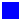
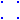
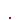
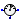
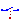
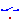

Connectors and partial models for Analog electrical components
This package contains connectors and interfaces (partial models) for analog electrical components. The partial models contain typical combinations of pins, and internal variables which are often used. Furthermore, the thermal heat port is in this package which can be included by inheritance.
Extends from Modelica.Icons.InterfacesPackage (Icon for packages containing interfaces).
| Name | Description |
|---|---|
|  Pin | Pin of an electrical component |
| PositivePin | Positive pin of an electrical component |
| Negative pin of an electrical component | |
| Component with two electrical pins | |
| Component with two electrical pins p and n and current i from p to n | |
|  FourPin | Component with two pairs of each two electrical pins |
| TwoPort | Component with two electrical ports, including current |
|  ConditionalHeatPort | Partial model to include a conditional HeatPort in order to describe the power loss via a thermal network |
| PartialConditionalHeatPort | Partial model to include a conditional HeatPort in order to dissipate losses, used for graphical modeling, i.e., for building models by drag-and-drop |
| AbsoluteSensor | Base class to measure the absolute value of a pin variable |
|  RelativeSensor | Base class to measure a relative variable between two pins |
| Interface for voltage sources | |
| Interface for current sources | |
| Ideal semiconductor | |
|  IdealSwitch | Ideal electrical switch |
|  IdealSwitchWithArc | Ideal switch with simple arc model |
Pin of an electrical component
Pin is the basic electric connector. It includes the voltage which consists between the pin and the ground node. The ground node is the node of (any) ground device (Modelica.Electrical.Basic.Ground). Furthermore, the pin includes the current, which is considered to be positive if it is flowing at the pin into the device.
| Name | Description |
|---|---|
| v | Potential at the pin [V] |
| i | Current flowing into the pin [A] |
Positive pin of an electrical component
Connectors PositivePin and NegativePin are nearly identical. The only difference is that the icons are different in order to identify more easily the pins of a component. Usually, connector PositivePin is used for the positive and connector NegativePin for the negative pin of an electrical component.
| Name | Description |
|---|---|
| v | Potential at the pin [V] |
| i | Current flowing into the pin [A] |
 Modelica.Electrical.Analog.Interfaces.NegativePin
Modelica.Electrical.Analog.Interfaces.NegativePinNegative pin of an electrical component
Connectors PositivePin and NegativePin are nearly identical. The only difference is that the icons are different in order to identify more easily the pins of a component. Usually, connector PositivePin is used for the positive and connector NegativePin for the negative pin of an electrical component.
| Name | Description |
|---|---|
| v | Potential at the pin [V] |
| i | Current flowing into the pin [A] |
Component with two electrical pins
TwoPin is a partial model with two pins and one internal variable for the voltage over the two pins. Internal currents are not defined. It is intended to be used in cases where the model which inherits TwoPin is composed by combining other components graphically, not by equations.
| Name | Description |
|---|---|
| p | Positive electrical pin |
| n | Negative electrical pin |
Component with two electrical pins p and n and current i from p to n
Superclass of elements which have two electrical pins: the positive pin connector p, and the negative pin connector n. It is assumed that the current flowing into pin p is identical to the current flowing out of pin n. This current is provided explicitly as current i.
Extends from TwoPin (Component with two electrical pins).
| Name | Description |
|---|---|
| p | Positive electrical pin |
| n | Negative electrical pin |
Component with two pairs of each two electrical pins
FourPin is a partial model that consists of two pairs of each two electrical pins.
| Name | Description |
|---|---|
| p1 | Positive electrical pin of port 1 |
| n1 | Negative electrical pin of port 1 |
| p2 | Positive electrical pin of port 2 |
| n2 | Negative electrical pin of port 2 |
Component with two electrical ports, including current
TwoPort is a partial model that consists of two ports. Like OnePort each port has two pins. It is assumed that the current flowing into the positive pin is identical to the current flowing out of pin n. This currents of each port are provided explicitly as currents i1 and i2, the voltages respectively as v1 and v2.
Extends from FourPin (Component with two pairs of each two electrical pins).
| Name | Description |
|---|---|
| p1 | Positive electrical pin of port 1 |
| n1 | Negative electrical pin of port 1 |
| p2 | Positive electrical pin of port 2 |
| n2 | Negative electrical pin of port 2 |
 Modelica.Electrical.Analog.Interfaces.ConditionalHeatPort
Modelica.Electrical.Analog.Interfaces.ConditionalHeatPortPartial model to include a conditional HeatPort in order to describe the power loss via a thermal network
This partial model provides a conditional heating port for the connection to a thermal network.
If this model is used, the loss power has to be provided by an equation in the model which inherits from ConditionalHeatingPort model (lossPower = ...). As device temperature T_heatPort can be used to describe the influence of the device temperature on the model behaviour.
| Name | Description |
|---|---|
| useHeatPort | = true, if heatPort is enabled |
| T | Fixed device temperature if useHeatPort = false [K] |
| Name | Description |
|---|---|
| heatPort | Conditional heat port |
Modelica.Electrical.Analog.Interfaces.PartialConditionalHeatPortPartial model to include a conditional HeatPort in order to dissipate losses, used for graphical modeling, i.e., for building models by drag-and-drop
This partial model provides a conditional heat port for dissipating losses.
If this model is used, the internalHeatPort has to be connected in the model which inherits from PartialElementaryConditionalHeatPort model. The device temperature internalHeatPort.T can be used to describe the influence of the device temperature on the model behaviour.
| Name | Description |
|---|---|
| useHeatPort | =true, if HeatPort is enabled |
| T | Fixed device temperature if useHeatPort = false [K] |
| Name | Description |
|---|---|
| heatPort | Optional port to which dissipated losses are transported in form of heat |
Base class to measure the absolute value of a pin variable
The AbsoluteSensor is a partial model for converting values that can be calculated from one pin connector into a real valued signal. The special calculation has to be described in the model which inherits the AbsoluteSensor. It is often used in sensor devices. To be a true sensor the modeller has to take care that the sensor model does not influence the electrical behavior to be measured.
Extends from Modelica.Icons.RoundSensor (Icon representing a round measurement device).
| Name | Description |
|---|---|
| p | Positive electrical pin |
| y | Measured quantity as Real output signal |
Base class to measure a relative variable between two pins
The RelaticeSensor is a partial model for converting values that can be calculated from two pin connectors into a real valued signal. The special calculation has to be described in the model which inherits the RelativeSensor. It is often used in sensor devices. To be a true sensor the modeller has to take care that the sensor model does not influence the electrical behavior to be measured.
Extends from Modelica.Icons.RoundSensor (Icon representing a round measurement device).
| Name | Description |
|---|---|
| p | Positive electrical pin |
| n | Negative electrical pin |
| y | Measured quantity as Real output signal |
 Modelica.Electrical.Analog.Interfaces.VoltageSource
Modelica.Electrical.Analog.Interfaces.VoltageSourceInterface for voltage sources
The VoltageSource partial model prepares voltage sources by providing the pins, and the offset and startTime parameters, which are the same at all voltage sources. The source behavior is taken from Modelica.Blocks signal sources by inheritance and usage of the replaceable possibilities.
Extends from Modelica.Electrical.Analog.Icons.VoltageSource (Icon for voltage sources), OnePort (Component with two electrical pins p and n and current i from p to n).
| Name | Description |
|---|---|
| signalSource | |
| offset | Voltage offset [V] |
| startTime | Time offset [s] |
| Name | Description |
|---|---|
| p | Positive electrical pin |
| n | Negative electrical pin |
Interface for current sources
The CurrentSource partial model prepares current sources by providing the pins, and the offset and startTime parameters, which are the same at all current sources. The source behavior is taken from Modelica.Blocks signal sources by inheritance and usage of the replaceable possibilities.
Extends from Modelica.Electrical.Analog.Icons.CurrentSource (Icon for current sources), OnePort (Component with two electrical pins p and n and current i from p to n).
| Name | Description |
|---|---|
| signalSource | |
| offset | Current offset [A] |
| startTime | Time offset [s] |
| Name | Description |
|---|---|
| p | Positive electrical pin |
| n | Negative electrical pin |
 Modelica.Electrical.Analog.Interfaces.IdealSemiconductor
Modelica.Electrical.Analog.Interfaces.IdealSemiconductorIdeal semiconductor
This is an ideal semiconductor which is
open (off), if it is reversed biased (voltage drop less than 0)
closed (on), if it is conducting (current > 0).
This is the behaviour if all parameters are exactly zero.
Note, there are circuits, where this ideal description
with zero resistance and zero conductance is not possible.
In order to prevent singularities during switching, the opened
semiconductor has a small conductance Gon
and the closed semiconductor has a low resistance Roff which is default.
The parameter Vknee which is the forward threshold voltage, allows to displace
the knee point
along the Gon-characteristic until v = Vknee.
Please note:
In case of useHeatPort=true the temperature dependence of the electrical
behavior is not modelled.
Extends from Modelica.Electrical.Analog.Interfaces.OnePort (Component with two electrical pins p and n and current i from p to n), Modelica.Electrical.Analog.Interfaces.ConditionalHeatPort (Partial model to include a conditional HeatPort in order to describe the power loss via a thermal network).
| Name | Description |
|---|---|
| Ron | Forward state-on differential resistance (closed resistance) [Ohm] |
| Goff | Backward state-off conductance (opened conductance) [S] |
| Vknee | Forward threshold voltage [V] |
| useHeatPort | = true, if heatPort is enabled |
| T | Fixed device temperature if useHeatPort = false [K] |
| Name | Description |
|---|---|
| p | Positive electrical pin |
| n | Negative electrical pin |
| heatPort | Conditional heat port |
Ideal electrical switch
The ideal switch has a positive pin p and a negative pin n.
The switching behaviour is controlled by the boolean signal off.
If off is true, pin p is not connected with negative pin n.
Otherwise, pin p is connected with negative pin n.
In order to prevent singularities during switching, the opened
switch has a (very low) conductance Goff
and the closed switch has a (very low) resistance Ron.
The limiting case is also allowed, i.e., the resistance Ron of the
closed switch could be exactly zero and the conductance Goff of the
open switch could be also exactly zero. Note, there are circuits,
where a description with zero Ron or zero Goff is not possible.
Please note:
In case of useHeatPort=true the temperature dependence of the electrical
behavior is not modelled. The parameters are not temperature dependent.
Extends from Modelica.Electrical.Analog.Interfaces.OnePort (Component with two electrical pins p and n and current i from p to n), Modelica.Electrical.Analog.Interfaces.ConditionalHeatPort (Partial model to include a conditional HeatPort in order to describe the power loss via a thermal network).
| Name | Description |
|---|---|
| Ron | Closed switch resistance [Ohm] |
| Goff | Opened switch conductance [S] |
| useHeatPort | = true, if heatPort is enabled |
| T | Fixed device temperature if useHeatPort = false [K] |
| Name | Description |
|---|---|
| p | Positive electrical pin |
| n | Negative electrical pin |
| heatPort | Conditional heat port |
Ideal switch with simple arc model
This model is an extension to the IdealSwitch.
The basic model interrupts the current through the switch in an infinitesimal time span. If an inductive circuit is connected, the voltage across the switch is limited only by numerics. In order to give a better idea for the voltage across the switch, a simple arc model is added:
When the Boolean variable off signals to open the switch, a voltage across the opened switch is impressed.
This voltage starts with V0 (simulating the voltage drop of the arc roots), then rising with slope dVdt
(simulating the rising voltage of an extending arc) until a maximum voltage Vmax is reached.
| voltage
Vmax | +-----
| /
| /
V0 | +
| |
+---+-------- time
This arc voltage tends to lower the current following through the switch; it depends on the connected circuit, when the arc is quenched.
Once the arc is quenched, i.e., the current flowing through the switch gets zero, the equation for the off-state is activated
i=Goff*v.
When the Boolean variable off signals to close the switch again, the switch is closed immediately,
i.e., the equation for the on-state is activated v=Ron*i.
Please note: In an AC circuit, at least the arc quenches when the next natural zero-crossing of the current occurs.
In a DC circuit, the arc will not quench if the arc voltage is not sufficient that a zero-crossing of the current occurs.
Please note:
In case of useHeatPort=true the temperature dependence of the electrical
behavior is not modelled. The parameters are not temperature dependent.
Extends from Modelica.Electrical.Analog.Interfaces.OnePort (Component with two electrical pins p and n and current i from p to n), Modelica.Electrical.Analog.Interfaces.ConditionalHeatPort (Partial model to include a conditional HeatPort in order to describe the power loss via a thermal network).
| Name | Description |
|---|---|
| Ron | Closed switch resistance [Ohm] |
| Goff | Opened switch conductance [S] |
| V0 | Initial arc voltage [V] |
| dVdt | Arc voltage slope [V/s] |
| Vmax | Max. arc voltage [V] |
| useHeatPort | = true, if heatPort is enabled |
| T | Fixed device temperature if useHeatPort = false [K] |
| Name | Description |
|---|---|
| p | Positive electrical pin |
| n | Negative electrical pin |
| heatPort | Conditional heat port |